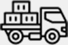
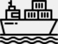
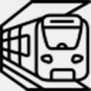

BULK
벌크화물하역
수출입 항만물류의 중심, 세방의 벌크하역이 귀사의 물류 경쟁력을 책임지겠습니다. 세방은 전국의 주요항만 하역거점을 구축하고 50여 년간의 항만하역 노하우와 최신식 하역장비, 접안이 용이한 선석과 넓은 배후부지, 현대화된 창고 등을 통해 고객에게 신속하고 안전한 하역 및 보관서비스를 24시간 제공하고 있습니다. 산업용 원료, 일반기계, 자동차, 산업설비, 장비 등 다양한 화종에 맞는 적정 하역 장비의 투입과, 전문기술을 활용한 효율적 하역작업, 안전한 화물장치 등은 고객의 경쟁력 강화는 물론, 고객의 진정한 파트너로서 자리매김하고 있습니다.
- 24년의 역사를 가진
항만하역 사업
- 전국 주요항만에
당사 지점 개설
- 어떠한 종류의 화물도
완벽하게 하역작업 처리가능
벌크화물운송
고객의 Needs를 충족하기 위한 세방의 노력은 고객만족으로 이어지고 있습니다.세방는 지난 수십여 년 간 쌓아온 운송 노하우와 숙련된 기술을 바탕으로, 수출입 원자재부터 완제품에 이르는 다양한 BULK화물을 고객의 Needs에 따라 출발지부터 목적지까지 다양한 방법으로 안전하고 신속하게 운송하고 있습니다. 이와 같은 체계적이고 전문적인 세방 벌크 운송시스템은 고객에게 완벽한 물류솔루션을 제공해 드리며, 항상 고객만족 실현을 최우선 과제로 생각하고 있습니다.
- 모든 종류의 화물 대한
완벽한 수송 및 배송서비스 제공
- 각종 화물을 고객이 원하는
장소까지 배송
중량물 운송 및 해송
세방의 중량물운송 신화는 지금도 계속되고 있습니다.
발전/화학설비, 선박블록 등의 초대형 중량화물을, 국내
산간벽지 부터 해외 Job Site까지 고객이 원하는 모든
장소에, 초중량물 특수장비 및 숙련된 전문인력을 투입하여,
제작공장 부터 설치장소에 이르는 전 운송 과정을
일괄적으로 처리하고 있습니다.
불가능을 가능케 만드는 세방의 중량물운송 노하우와
완벽한 장비체제는 새로운 역사를 지속적으로 창조해 가고
있으며, 활발한 해외진출 사업을 통하여 국내는 물론
해외에서도 세방의 운송신화는 계속되고 있습니다.
- 발전소, 석유화학공장, 선박기자재, 중공업용의 각종 타워 및 철구조물 등 초중량화물
- 
- MULTI MODULE TRANSPORTER 등 상차능력 4천톤 이상의 장비 구비
- 
- 중량물 해송용 바지선과 예인선 확보
- 
- 모듈트랜스포터에 의한 육상운송과 연계
중량물 설치
어렵고 복잡한 벌크하역 및 중량물 운송 분야에서 풍부한 경험과 실적을 보유하고 있는 세방은 SPMT / 자항선 등 최신의 첨단장비를 보유, 완벽한 장비체계와 기술인력을 갖추고 있습니다. 육상운송과 항만하역, 해상운송을 연계하는 입체적이며 일관된 운송 서비스는, 고객만족이라는 최상의 기업가치를 실현하고 있습니다.
- 중량물 설치전문 장비인
"크라이밍 잭 시스템(Climbing Jack System)"
- 잭 업/다운(Jack Up/Down)
기능을 통한 안정 보장